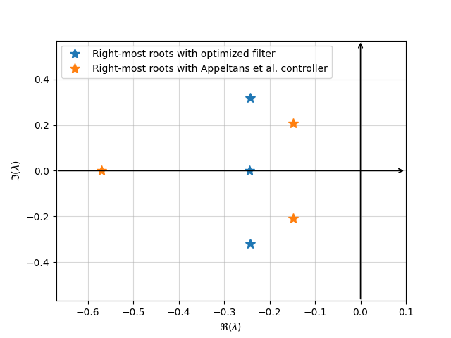

Note
Go to the end to download the full example code.
Co-design of PD controllers and low-pass filter for TDS#
Let us consider the following example, retrieved from Appeltans et al. The system is described as follows:
where \(\tau_0 > 0\) denotes a delay in the input channel.
We consider a PD controller given by
where \(T > 0\) is the filter constant, with cut-off frequency given by \(\omega_c = 1/T\).
In the work of Appeltans et al., an optimization is carried out for the delay-free system, assuming an ideal derivative action, under additional constraints ensuring that the filtered spectral abscissa is strictly negative. This guarantees that the delayed system remains stable for sufficiently small values of \(T\).
The resulting locally optimal gains are \(K_p = -1.08015\) and \(K_d = -1.04045\). However, the resulting closed-loop system is only guaranteed to be stable for sufficiently small values of \(T\).
Here, we propose to optimize the gains and the filter constant simultaneously by directly minimizing the spectral abscissa of the closed-loop system.
To this end, we rewrite the closed-loop system by including the filtered derivative in the state vector. That is, we consider the extended state
The closed-loop system can then be rewritten as a DDAE of the form
import tdcpy
import numpy as np
from numpy.linalg import svd
import matplotlib.pyplot as plt
from scipy import optimize
# Create the system with given gains and filter paramter (k[0] = kp, k[1] = kd, k[2] = T)
def create_system(k: list[float]):
A = np.array([[-1, 1/3, 1], [1, 0, 0], [0, 1, 0]])
B = np.array([[2], [0], [0]])
C = np.array([[0.5, 0, 0.5]])
A0 = np.block([[A, np.zeros((3,1))], [np.zeros((1,3)), -1/k[2]]])
A1 = np.block([[B*k[0]*C, B*k[1]], [np.zeros((1,4))]])
C0 = np.array([[0.5, 0, 0.5, 0]])
A = np.stack([A0, A1], axis=2)
tau = np.array([0, 0.2])
E = np.block([[np.eye(3), np.zeros((3,1))], [(-1/k[2])*C, np.ones((1,1))]])
return tdcpy.DDAE(E=E, A=A, hA=tau) # DDAE Definition
# Function to compute spectral abscissa and its gradient for given gains and filter parameter
def closed_loop(k: list[float]):
''''
Create the closed-loop system with a PD controller including a filter.
k -> [kp, kd, T]
Compute the s.a. and its gradient to later use for optimization.
'''
alpha = 1 # penalty parameter for T < 0.5 and T > 2
A = np.array([[-1, 1/3, 1], [1, 0, 0], [0, 1, 0]])
B = np.array([[2], [0], [0]])
C = np.array([[0.5, 0, 0.5]])
A0 = np.block([[A, np.zeros((3,1))], [np.zeros((1,3)), -1/k[2]]])
A1 = np.block([[B*k[0]*C, B*k[1]], [np.zeros((1,4))]])
C0 = np.array([[0.5, 0, 0.5, 0]])
A = np.stack([A0, A1], axis=2)
tau = np.array([0, 0.2])
E = np.block([[np.eye(3), np.zeros((3,1))], [(-1/k[2])*C, np.ones((1,1))]])
sys = tdcpy.DDAE(E=E, A=A, hA=tau) # DDAE Definition
sa = tdcpy.sa(sys)
# Singular value decomposition
M = sa * E - A0 - A1 * np.exp(-tau[1] * sa)
U, S, Vh = svd(M)
U = np.array(U)
V = np.array(Vh).T
u = U[:, -1] # left singular vector (last column of U)
v = V[:, -1] # right singular vector (last column of V)
# derivative w.r.t. lambda
dMdlambda = E + tau[1] * A1 * np.exp(-sa * tau[1])
# Compute the gradient of s.a.
dMdk1 = -np.block([
[B @ C, np.zeros((3,1))],
[np.zeros((1,3)), 0]
])
dSA1 = np.real(-(u.T @ dMdk1 @ v) / (u.T @ dMdlambda @ v))
# Second component
dMdk2 = -np.block([
[np.zeros((3,3)), B],
[np.zeros((1,3)), 0]
])
dSA2 = np.real(-(u.T @ dMdk2 @ v) / (u.T @ dMdlambda @ v))
# Last component (derivative wrt T)
dMdT = -(1/k[2]**2) * (
sa * np.block([
[np.zeros((3,4))],
[np.hstack([C, np.zeros((1,1))])]
]) - np.block([
[np.zeros((3,4))],
[np.array([[0,0,0,1]])]
]))
if k[2] > 2:
dMdT = dMdT + alpha*np.eye(4)
elif k[2] < 0.1:
dMdT = dMdT - alpha*np.eye(4)
dSA3 = np.real(-(u.T @ dMdT @ v) / (u.T @ dMdlambda @ v))
# Collect gradient
d_sa = np.array([dSA1, dSA2, dSA3])
return [sa, d_sa]
# Spectral abscissa function
def objective(k: list[float])-> float:
f, _ = closed_loop(k)
return f
# gradient
def gradient(k: list[float])-> np.ndarray:
_, g = closed_loop(k)
return g
# Initial guess
Here we use Appeltans et al. gains as initial guess, and T = 0.1 as initial filter parameter. we can confirm the system is stable for these paramenter.
-0.14758656085745733
res = optimize.minimize(
fun=objective,
x0=k0,
jac=gradient,
method="L-BFGS-B",
options={"maxiter": 10000, "disp": True}
)
print("Optimal control:", res.x)
print("Optimal spectral abscissa:", res.fun)
# print("Right-most root before optimizing ", closed_loop(k0)[0], "After",closed_loop(res.x)[0])
# Optimal from hanso in matlab
/home/runner/work/tdcpy/tdcpy/examples/10_aplications/filter_opt.py:208: DeprecationWarning: scipy.optimize: The `disp` and `iprint` options of the L-BFGS-B solver are deprecated and will be removed in SciPy 1.18.0.
res = optimize.minimize(
Optimal control: [-1.08015 -1.04045 0.1 ]
Optimal spectral abscissa: -0.1475865608574133
opt_param = [-1.0979, -1.2259, 0.1740]
# We compare the right-most roots obtained with both approaches
print("Right-most root before optimizing ", closed_loop(k0)[0], "After",closed_loop(opt_param)[0])
opt_syst = create_system(opt_param)
r = [-10, 1, -4, 4]
roots_me, info = tdcpy.roots(opt_syst, r=r)
roots_a, info = tdcpy.roots(create_system(k0), r =r)
# Plot configuration to mimic MATLAB's plot style
Right-most root before optimizing -0.14758656085745733 After -0.24348093763885983
plt.plot(np.real(roots_me), np.imag(roots_me), '*', markersize = 10, label='Right-most roots with optimized filter')
plt.plot(np.real(roots_a), np.imag(roots_a), '*', markersize = 10, label='Right-most roots with Appeltans et al. controller')
plt.xlabel(r"$\Re(\lambda)$")
plt.ylabel(r"$\Im(\lambda)$")
plt.xlim(min(np.real(roots_a))-0.1, 0.1)
plt.ylim(-max(np.imag(roots_me)) - 0.25, max(np.imag(roots_me)) + 0.25)
plt.grid(alpha=0.5)
# Add arrows for real and imaginary axes
ax = plt.gca()
xmin, xmax = ax.get_xlim()
ymin, ymax = ax.get_ylim()
# Real axis arrow
ax.annotate(
'', xy=(xmax, 0), xytext=(xmin, 0),
arrowprops=dict(arrowstyle='->', color='black', lw=1.2)
)
# Imaginary axis arrow
ax.annotate(
'', xy=(0, ymax), xytext=(0, ymin),
arrowprops=dict(arrowstyle='->', color='black', lw=1.2)
)
plt.legend()
plt.show()

Total running time of the script: (0 minutes 0.466 seconds)